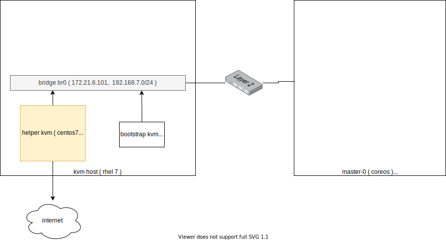

openshift 4.9 静态IP 半离线 baremetal 安装 SNO(single node openshift) 模式
本文描述ocp4.9在baremetal(kvm模拟)上面，静态ip安装的方法。

离线安装包下载
打包好的安装包，在这里下载，百度盘下载链接，版本是 4.9.5 :
- 链接: https://pan.baidu.com/s/1qsQ_xlaUxV_60gHfEl6BzA 提取码: fo80
其中包括如下类型的文件：
- ocp4.tgz 这个文件包含了iso等安装介质，以及各种安装脚本，全部下载的镜像列表等。需要复制到宿主机，以及工具机上去。
- registry.tgz 这个文件也是docker image registry的仓库打包文件。
宿主机准备
本次实验，是在一个32C， 256G 的主机上面，用很多个虚拟机安装测试。所以先准备这个宿主机。
如果是多台宿主机，记得一定要调整时间配置，让这些宿主机的时间基本一致，否则证书会出问题。
主要的准备工作有
- 配置yum源
- 配置dns
- 安装镜像仓库
- 配置vnc环境
- 配置kvm需要的网络
- 创建helper kvm
- 配置一个haproxy，从外部导入流量给kvm
以上准备工作，dns部分需要根据实际项目环境有所调整。
本次的宿主机是两台rocky linux
kvm host 101
# 因为是半离线，我们的host os还有helper os是联线的，那么我们就用在线的源吧。
# dnf -y install https://dl.fedoraproject.org/pub/epel/epel-release-latest-8.noarch.rpm
dnf install -y epel-release
dnf install -y byobu htop dstat
# 准备vnc环境
vncpasswd
cat << EOF > ~/.vnc/config
session=gnome
securitytypes=vncauth,tlsvnc
# desktop=sandbox
geometry=1280x800
alwaysshared
EOF
cat << EOF >> /etc/tigervnc/vncserver.users
:1=root
EOF
# systemctl disable vncserver@:1
systemctl start vncserver@:1
# 如果你想停掉vnc server，这么做
systemctl stop vncserver@:1
# /usr/libexec/vncsession-start :1
# 配置kvm环境
dnf -y groupinstall "Server with GUI"
dnf -y install qemu-kvm libvirt libguestfs-tools virt-install virt-viewer virt-manager tigervnc-server
systemctl disable --now firewalld
systemctl enable --now libvirtd
# 创建实验用虚拟网络
mkdir -p /data/kvm
cat << 'EOF' > /data/kvm/bridge.sh
#!/usr/bin/env bash
PUB_CONN='eno1'
PUB_IP='172.21.6.104/24'
PUB_GW='172.21.6.254'
PUB_DNS='172.21.1.1'
nmcli con down "$PUB_CONN"
nmcli con delete "$PUB_CONN"
nmcli con down baremetal
nmcli con delete baremetal
# RHEL 8.1 appends the word "System" in front of the connection,delete in case it exists
nmcli con down "System $PUB_CONN"
nmcli con delete "System $PUB_CONN"
nmcli connection add ifname baremetal type bridge con-name baremetal ipv4.method 'manual' \
ipv4.address "$PUB_IP" \
ipv4.gateway "$PUB_GW" \
ipv4.dns "$PUB_DNS"
nmcli con add type bridge-slave ifname "$PUB_CONN" master baremetal
nmcli con down "$PUB_CONN";pkill dhclient;dhclient baremetal
nmcli con up baremetal
EOF
bash /data/kvm/bridge.sh
# 创建工具机
mkdir -p /data/kvm
cd /data/kvm
osinfo-query os | grep rhel8
# rhel8-unknown | Red Hat Enterprise Linux 8 Unknown | 8-unknown | http://redhat.com/rhel/8-unknown
# rhel8.0 | Red Hat Enterprise Linux 8.0 | 8.0 | http://redhat.com/rhel/8.0
# rhel8.1 | Red Hat Enterprise Linux 8.1 | 8.1 | http://redhat.com/rhel/8.1
# rhel8.2 | Red Hat Enterprise Linux 8.2 | 8.2 | http://redhat.com/rhel/8.2
# rhel8.3 | Red Hat Enterprise Linux 8.3 | 8.3 | http://redhat.com/rhel/8.3
# rhel8.4 | Red Hat Enterprise Linux 8.4 | 8.4 | http://redhat.com/rhel/8.4
wget https://mirrors.sjtug.sjtu.edu.cn/rocky/8.4/isos/x86_64/Rocky-8.4-x86_64-minimal.iso
# lvremove -f rhel/data
lvcreate -y -l 100%FREE -n data nvme
mkfs.xfs /dev/nvme/data
mkdir -p /data/nvme
mount /dev/nvme/data /data/nvme
cat << EOF >> /etc/fstab
/dev/nvme/data /data/nvme xfs defaults 0 0
EOF
cd /data/kvm
wget https://mirrors.sjtug.sjtu.edu.cn/rocky/8.4/isos/x86_64/Rocky-8.4-x86_64-minimal.iso
export http_proxy="http://192.168.195.54:5085"
export https_proxy=${http_proxy}
wget https://raw.githubusercontent.com/wangzheng422/docker_env/dev/redhat/ocp4/4.8/scripts/helper-ks-rocky.cfg
unset http_proxy
unset https_proxy
sed -i '0,/^network.*/s/^network.*/network --bootproto=static --device=enp1s0 --gateway=192.168.7.1 --ip=192.168.7.71 --netmask=255.255.255.0 --nameserver=192.168.7.71 --ipv6=auto --activate/' helper-ks-rhel8.cfg
# https://stackoverflow.com/questions/18620153/find-matching-text-and-replace-next-line
sed -i '/^network.*/{n;s/^network.*/network --hostname=sno-helper/}' helper-ks-rhel8.cfg
export KVM_DIRECTORY=/home/data/kvm
virt-install --name="sno-aHelper" --vcpus=2 --ram=4096 \
--cpu=host-model \
--disk path=${KVM_DIRECTORY}/sno-aHelper.qcow2,bus=virtio,size=20 \
--os-variant rhel8.3 --network bridge=baremetal,model=virtio \
--graphics vnc,port=59200 \
--boot menu=on \
--location ${KVM_DIRECTORY}/rhel-8.3-x86_64-dvd.iso \
--disk ${KVM_DIRECTORY}/rhel-8.3-x86_64-dvd.iso,device=cdrom \
--initrd-inject helper-ks-rhel8.cfg --extra-args "inst.ks=file:/helper-ks-rhel8.cfg"
# virt-viewer --domain-name ocp4-aHelper
# virsh start ocp4-aHelper
# virsh list --all
# start chrony/ntp server on host
# cat << EOF > /etc/chrony.conf
# driftfile /var/lib/chrony/drift
# makestep 1.0 3
# rtcsync
# allow 192.0.0.0/8
# local stratum 10
# logdir /var/log/chrony
# EOF
# echo "allow 192.0.0.0/8" >> /etc/chrony.conf
# systemctl enable --now chronyd
# # systemctl restart chronyd
# chronyc tracking
# chronyc sources -v
# chronyc sourcestats -v
# chronyc makestep
工具机准备
以下是在工具机里面，进行的安装操作。
主要的操作有
- 配置yum源
- 运行ansible脚本，自动配置工具机
- 上传定制的安装配置文件
- 生成ignition文件
export YUMIP="192.168.7.1"
cat << EOF > /etc/yum.repos.d/remote.repo
[remote-ftp]
name=ftp
baseurl=ftp://${YUMIP}/
enabled=1
gpgcheck=0
EOF
# dnf install -y epel-release
# dnf install -y byobu
dnf update -y
reboot
sed -i 's/#UseDNS yes/UseDNS no/g' /etc/ssh/sshd_config
systemctl restart sshd
cat << EOF > /root/.ssh/config
StrictHostKeyChecking no
UserKnownHostsFile=/dev/null
EOF
echo "allow 192.0.0.0/8" >> /etc/chrony.conf
systemctl enable --now chronyd
# systemctl restart chronyd
chronyc tracking
chronyc sources -v
chronyc sourcestats -v
chronyc makestep
# nmcli con mod enp1s0 +ipv4.addresses "192.168.7.71/24"
# nmcli con up enp1s0
dnf -y install ansible git unzip podman python3 buildah skopeo
mkdir -p /data/ocp4/
# scp ocp4.tgz to /data
# scp * root@172.21.6.11:/data/
cd /data
tar zvxf ocp.*.tgz
tar zvxf registry.*.tgz
cd /data/ocp4
rm -f /data/*.tgz
# 配置registry
# 配置registry
mkdir -p /etc/crts/ && cd /etc/crts
# https://access.redhat.com/documentation/en-us/red_hat_codeready_workspaces/2.1/html/installation_guide/installing-codeready-workspaces-in-tls-mode-with-self-signed-certificates_crw
openssl genrsa -out /etc/crts/redhat.ren.ca.key 4096
openssl req -x509 \
-new -nodes \
-key /etc/crts/redhat.ren.ca.key \
-sha256 \
-days 36500 \
-out /etc/crts/redhat.ren.ca.crt \
-subj /CN="Local Red Hat Ren Signer" \
-reqexts SAN \
-extensions SAN \
-config <(cat /etc/pki/tls/openssl.cnf \
<(printf '[SAN]\nbasicConstraints=critical, CA:TRUE\nkeyUsage=keyCertSign, cRLSign, digitalSignature'))
openssl genrsa -out /etc/crts/redhat.ren.key 2048
openssl req -new -sha256 \
-key /etc/crts/redhat.ren.key \
-subj "/O=Local Red Hat Ren /CN=*.ocp4.redhat.ren" \
-reqexts SAN \
-config <(cat /etc/pki/tls/openssl.cnf \
<(printf "\n[SAN]\nsubjectAltName=DNS:*.ocp4.redhat.ren,DNS:*.apps.ocp4.redhat.ren,DNS:*.redhat.ren\nbasicConstraints=critical, CA:FALSE\nkeyUsage=digitalSignature, keyEncipherment, keyAgreement, dataEncipherment\nextendedKeyUsage=serverAuth")) \
-out /etc/crts/redhat.ren.csr
openssl x509 \
-req \
-sha256 \
-extfile <(printf "subjectAltName=DNS:*.ocp4.redhat.ren,DNS:*.apps.ocp4.redhat.ren,DNS:*.redhat.ren\nbasicConstraints=critical, CA:FALSE\nkeyUsage=digitalSignature, keyEncipherment, keyAgreement, dataEncipherment\nextendedKeyUsage=serverAuth") \
-days 365 \
-in /etc/crts/redhat.ren.csr \
-CA /etc/crts/redhat.ren.ca.crt \
-CAkey /etc/crts/redhat.ren.ca.key \
-CAcreateserial -out /etc/crts/redhat.ren.crt
openssl x509 -in /etc/crts/redhat.ren.crt -text
/bin/cp -f /etc/crts/redhat.ren.ca.crt /etc/pki/ca-trust/source/anchors/
update-ca-trust extract
cd /data
# mkdir -p /data/registry
# tar zxf registry.tgz
dnf -y install podman pigz skopeo jq
# pigz -dc registry.tgz | tar xf -
cd /data/ocp4
podman load -i /data/ocp4/registry.tgz
systemctl disable --now firewalld
podman run --restart always --name local-registry -p 5443:5443 \
-d --restart=always \
-v /home/ocp.4.9.5/registry/:/var/lib/registry:z \
-v /etc/crts:/certs:z \
-e REGISTRY_HTTP_ADDR=0.0.0.0:5443 \
-e REGISTRY_HTTP_TLS_CERTIFICATE=/certs/redhat.ren.crt \
-e REGISTRY_HTTP_TLS_KEY=/certs/redhat.ren.key \
docker.io/library/registry:2
podman start local-registry
# https://access.redhat.com/documentation/en-us/red_hat_enterprise_linux/8/html/building_running_and_managing_containers/assembly_porting-containers-to-systemd-using-podman_building-running-and-managing-containers
# podman generate systemd --new --files --name local-registry
podman generate systemd --files --name local-registry
# /root/container-local-registry.service
cp -Z container-local-registry.service /usr/lib/systemd/system
systemctl enable --now container-local-registry.service
systemctl status container-local-registry.service
# podman rm --storage 7cb9fcea76ad384313a682a469be6784786eb5004a190ad2abe68978b1566416
# firewall-cmd --permanent --add-port=5443/tcp
# firewall-cmd --reload
# 加载更多的镜像
# 解压缩 ocp4.tgz
# bash add.image.load.sh /data/4.6.5/install.image 'registry.ocp4.redhat.ren:5443'
# https://github.com/christianh814/ocp4-upi-helpernode/blob/master/docs/quickstart.md
# in helper node
# mkdir /etc/yum.repos.d.bak
# mv /etc/yum.repos.d/* /etc/yum.repos.d.bak/
# cat << EOF > /etc/yum.repos.d/remote.repo
# [remote]
# name=RHEL FTP
# baseurl=ftp://192.168.7.1/data
# enabled=1
# gpgcheck=0
# EOF
# yum clean all
# yum repolist
# 这里使用了一个ansible的项目，用来部署helper节点的服务。
# https://github.com/wangzheng422/ocp4-upi-helpernode
cd /data/ocp4
unzip ocp4-upi-helpernode.zip
# 这里使用了一个ignition文件合并的项目，用来帮助自定义ignition文件。
# https://github.com/wangzheng422/filetranspiler
# podman load -i filetranspiler.tgz
# podman load -i nexus.tgz
ssh-keygen
# 接下来，我们使用ansible来配置helper节点，装上各种openshift集群需要的服务
# 根据现场环境，修改 ocp4-upi-helpernode-master/vars-static.yaml
# 主要是修改各个节点的网卡和硬盘参数，还有IP地址
cd /data/ocp4/ocp4-upi-helpernode-master
# ansible-playbook -e @vars-static.yaml -e '{staticips: true}' tasks/main.yml
cat << 'EOF' > /data/ocp4/ocp4-upi-helpernode-master/vars.yaml
---
ocp_version: 4.9.5
ssh_gen_key: false
staticips: true
firewalld: false
dns_forward: yes
iso:
iso_dl_url: "/data/ocp4/rhcos-live.x86_64.iso"
my_iso: "rhcos-live.iso" # this is internal file, just leave as it.
helper:
name: "helper"
ipaddr: "192.168.7.71"
networkifacename: "enp1s0"
gateway: "192.168.7.1"
netmask: "255.255.255.0"
dns:
domain: "redhat.ren"
clusterid: "ocp4s"
forwarder1: "202.106.0.20"
forwarder2: "202.106.0.20"
bootstrap:
name: "bootstrap"
ipaddr: "192.168.7.72"
interface: "enp1s0"
install_drive: "vda"
masters:
- name: "master-0"
ipaddr: "192.168.7.73"
interface: "enp103s0f1"
install_drive: "sda"
disable_interfaces:
- interface: "enp3s0"
- interface: "enp103s0f0"
# - name: "master-1"
# ipaddr: "192.168.7.14"
# interface: "enp1s0"
# install_drive: "vda"
# - name: "master-2"
# ipaddr: "192.168.7.15"
# interface: "enp1s0"
# install_drive: "vda"
# workers:
# - name: "worker-0"
# ipaddr: "192.168.7.16"
# interface: "ens3f0"
# install_drive: "sda"
# - name: "worker-1"
# ipaddr: "192.168.7.17"
# interface: "enp1s0"
# install_drive: "sda"
# - name: "worker-2"
# ipaddr: "192.168.7.18"
# interface: "enp1s0"
# install_drive: "vda"
# - name: "infra-0"
# ipaddr: "192.168.7.19"
# interface: "enp1s0"
# install_drive: "vda"
# - name: "infra-1"
# ipaddr: "192.168.7.20"
# interface: "enp1s0"
# install_drive: "vda"
# - name: "worker-3"
# ipaddr: "192.168.7.21"
# interface: "enp1s0"
# install_drive: "vda"
# - name: "worker-4"
# ipaddr: "192.168.7.22"
# interface: "enp1s0"
# install_drive: "vda"
others:
- name: "registry"
ipaddr: "192.168.7.1"
- name: "yum"
ipaddr: "192.168.7.1"
- name: "quay"
ipaddr: "192.168.7.11"
- name: "nexus"
ipaddr: "192.168.7.1"
- name: "git"
ipaddr: "192.168.7.11"
otherdomains:
- domain: "rhv.redhat.ren"
hosts:
- name: "manager"
ipaddr: "192.168.7.71"
- name: "rhv01"
ipaddr: "192.168.7.72"
- domain: "others.redhat.ren"
hosts:
- name: "*"
ipaddr: "192.168.7.71"
- name: "*.apps"
ipaddr: "192.168.7.71"
- domain: "ocp4.redhat.ren"
hosts:
- name: "registry"
ipaddr: "192.168.7.1"
- name: "yum"
ipaddr: "192.168.7.1"
- name: "quay"
ipaddr: "192.168.7.11"
- name: "nexus"
ipaddr: "192.168.7.1"
- name: "git"
ipaddr: "192.168.7.11"
force_ocp_download: false
remove_old_config_files: false
ocp_client: "file:///data/ocp4/{{ ocp_version }}/openshift-client-linux-{{ ocp_version }}.tar.gz"
ocp_installer: "file:///data/ocp4/{{ ocp_version }}/openshift-install-linux-{{ ocp_version }}.tar.gz"
ppc64le: false
arch: 'x86_64'
chronyconfig:
enabled: true
content:
- server: "192.168.7.1"
options: iburst
setup_registry: # don't worry about this, just leave it here
deploy: false
registry_image: docker.io/library/registry:2
local_repo: "ocp4/openshift4"
product_repo: "openshift-release-dev"
release_name: "ocp-release"
release_tag: "4.6.1-x86_64"
ocp_filetranspiler: "file:///data/ocp4/filetranspiler.tgz"
registry_server: "registry.ocp4.redhat.ren:5443"
EOF
ansible-playbook -e @vars.yaml tasks/main.yml
# try this:
/usr/local/bin/helpernodecheck
mkdir -p /data/install
# # GOTO image registry host
# # copy crt files to helper node
# scp /etc/crts/redhat.ren.ca.crt root@192.168.7.11:/data/install/
# scp /etc/crts/redhat.ren.crt root@192.168.7.11:/data/install/
# scp /etc/crts/redhat.ren.key root@192.168.7.11:/data/install/
# GO back to help node
# /bin/cp -f /data/install/redhat.ren.crt /etc/pki/ca-trust/source/anchors/
# update-ca-trust extract
# 定制ignition
cd /data/install
# 根据现场环境，修改 install-config.yaml
# 至少要修改ssh key， 还有 additionalTrustBundle，这个是镜像仓库的csr
# vi install-config.yaml
cat << EOF > /data/install/install-config.yaml
apiVersion: v1
baseDomain: redhat.ren
compute:
- hyperthreading: Enabled
name: worker
replicas: 0
controlPlane:
hyperthreading: Enabled
name: master
replicas: 1
metadata:
name: ocp4s
networking:
clusterNetworks:
- cidr: 10.128.0.0/14
hostPrefix: 23
networkType: OpenShiftSDN
serviceNetwork:
- 172.30.0.0/16
platform:
none: {}
pullSecret: '{"auths":{"registry.ocp4.redhat.ren:5443": {"auth": "ZHVtbXk6ZHVtbXk=","email": "noemail@localhost"},"registry.ppa.redhat.ren:5443": {"auth": "ZHVtbXk6ZHVtbXk=","email": "noemail@localhost"}}}'
sshKey: |
$( cat /root/.ssh/id_rsa.pub | sed 's/^/ /g' )
additionalTrustBundle: |
$( cat /etc/crts/redhat.ren.ca.crt | sed 's/^/ /g' )
imageContentSources:
- mirrors:
- registry.ocp4.redhat.ren:5443/ocp4/openshift4
- registry.ocp4.redhat.ren:5443/ocp4/release
source: quay.io/openshift-release-dev/ocp-release
- mirrors:
- registry.ocp4.redhat.ren:5443/ocp4/openshift4
- registry.ocp4.redhat.ren:5443/ocp4/release
source: quay.io/openshift-release-dev/ocp-v4.0-art-dev
EOF
cd /data/install/
/bin/rm -rf *.ign .openshift_install_state.json auth bootstrap manifests master*[0-9] worker*[0-9]
openshift-install create manifests --dir=/data/install
# copy ntp related config
/bin/cp -f /data/ocp4/ocp4-upi-helpernode-master/machineconfig/* /data/install/openshift/
# copy image registry proxy related config
cd /data/ocp4
bash image.registries.conf.sh nexus.ocp4.redhat.ren:8083
/bin/cp -f /data/ocp4/image.registries.conf /etc/containers/registries.conf.d/
/bin/cp -f /data/ocp4/99-worker-container-registries.yaml /data/install/openshift
/bin/cp -f /data/ocp4/99-master-container-registries.yaml /data/install/openshift
cd /data/install/
openshift-install create ignition-configs --dir=/data/install
cd /data/ocp4/ocp4-upi-helpernode-master
# 我们来为每个主机，复制自己版本的ign，并复制到web server的目录下
ansible-playbook -e @vars.yaml tasks/ign.yml
# 如果对每个主机有自己ign的独特需求，在这一步，去修改ign。
# 以下操作本来是想设置网卡地址，但是实践发现是不需要的。
# 保留在这里，是因为他可以在安装的时候注入文件，非常有用。
# mkdir -p bootstrap/etc/sysconfig/network-scripts/
# cat <<EOF > bootstrap/etc/sysconfig/network-scripts/ifcfg-ens3
# DEVICE=ens3
# BOOTPROTO=none
# ONBOOT=yes
# IPADDR=192.168.7.12
# NETMASK=255.255.255.0
# GATEWAY=192.168.7.1
# DNS=192.168.7.11
# DNS1=192.168.7.11
# DNS2=192.168.7.1
# DOMAIN=redhat.ren
# PREFIX=24
# DEFROUTE=yes
# IPV6INIT=no
# EOF
# filetranspiler -i bootstrap.ign -f bootstrap -o bootstrap-static.ign
# /bin/cp -f bootstrap-static.ign /var/www/html/ignition/
# 我们为每个节点创建各自的iso文件
cd /data/ocp4/ocp4-upi-helpernode-master
ansible-playbook -e @vars.yaml tasks/iso.yml
# if boot using live-iso, you need to run this cmd during install
nmtui
coreos-installer install --copy-network \
--ignition-url=http://192.168.7.71:8080/ignition/master-0.ign /dev/sda --insecure-ignition
回到宿主机
本来，到了这一步，就可以开始安装了，但是我们知道coreos装的时候，要手动输入很长的命令行，实际操作的时候，那是不可能输入对的，输入错一个字符，安装就失败，要重启，重新输入。。。
为了避免这种繁琐的操作，参考网上的做法，我们就需要为每个主机定制iso了。好在，之前的步骤，我们已经用ansible创建了需要的iso，我们把这些iso复制到宿主机上，就可以继续了。
这里面有一个坑，我们是不知道主机的网卡名称的，只能先用coreos iso安装启动一次，进入单用户模式以后，ip a 来查看以下，才能知道，一般来说，是ens3。
另外，如果是安装物理机，disk是哪个，也需要上述的方法，来看看具体的盘符。另外，推荐在物理机上安装rhel 8 来测试一下物理机是不是支持coreos。物理机安装的时候，遇到不写盘的问题，可以尝试添加启动参数： ignition.firstboot=1
# on kvm host 172.21.6.101
export KVM_DIRECTORY=/home/data/kvm
mkdir -p ${KVM_DIRECTORY}
cd ${KVM_DIRECTORY}
scp root@192.168.7.71:/data/install/{*boot*,*master-0,*worker-0}.iso ${KVM_DIRECTORY}/
# on kvm host 172.21.6.101
# finally, we can start install :)
# 你可以一口气把虚拟机都创建了，然后喝咖啡等着。
# 从这一步开始，到安装完毕，大概30分钟。
# export KVM_DIRECTORY=/data/kvm
virt-install --name=sno-bootstrap --vcpus=4 --ram=8192 \
--disk path=${KVM_DIRECTORY}/ocp4-bootstrap.qcow2,bus=virtio,size=50 \
--os-variant rhel8.3 --network bridge=baremetal,model=virtio \
--graphics vnc,port=59101 \
--boot menu=on --cdrom ${KVM_DIRECTORY}/rhcos_install-bootstrap.iso
# 想登录进coreos一探究竟？那么这么做
# ssh core@bootstrap
# journalctl -b -f -u bootkube.service
# export KVM_DIRECTORY=/data/kvm
virt-install --name=sno-master-0 --vcpus=16 --ram=49152 \
--cpu=host-model \
--disk path=${KVM_DIRECTORY}/ocp4-master-0.qcow2,bus=virtio,size=120 \
--os-variant rhel8.3 --network bridge=baremetal,model=virtio \
--graphics vnc,port=59002 \
--boot menu=on --cdrom ${KVM_DIRECTORY}/rhcos_install-master-0.iso
# virt-install --name=ocp4-master-1 --vcpus=10 --ram=20480 \
# --cpu=host-model \
# --disk path=/data/nvme/ocp4-master-1.qcow2,bus=virtio,size=120 \
# --os-variant rhel8.4 --network bridge=baremetal,model=virtio \
# --graphics vnc,port=59003 \
# --boot menu=on --cdrom ${KVM_DIRECTORY}/rhcos_install-master-1.iso
# # ssh core@192.168.7.13
# # on kvm host 172.21.6.103
# export KVM_DIRECTORY=/data/kvm
# virt-install --name=ocp4-master-2 --vcpus=22 --ram=30720 \
# --cpu=host-model \
# --disk path=/data/kvm/ocp4-master-2.qcow2,bus=virtio,size=120 \
# --os-variant rhel8.4 --network bridge=baremetal,model=virtio \
# --graphics vnc,port=59004 \
# --boot menu=on --cdrom ${KVM_DIRECTORY}/rhcos_install-master-2.iso
# on kvm host 172.21.6.104
export KVM_DIRECTORY=/data/kvm
# virt-install --name=ocp4-worker-0 --vcpus=4 --ram=10240 \
# --disk path=/data/kvm/ocp4-worker-0.qcow2,bus=virtio,size=120 \
# --os-variant rhel8.4 --network bridge=baremetal,model=virtio \
# --graphics vnc,port=59005 \
# --boot menu=on --cdrom ${KVM_DIRECTORY}/rhcos_install-worker-0.iso
# if install on baremetal
nmtui
coreos-install install --copy-network --ignition-url=http://192.168.7.71:8080/ignition/master-0.ign --inscure-ignition /dev/sda
# on workstation
# open http://192.168.7.11:9000/
# to check
# if you want to stop or delete vm, try this
virsh list --all
virsh destroy ocp4-bootstrap
virsh destroy ocp4-master-0
# virsh destroy ocp4-master-1
# virsh destroy ocp4-master-2
# virsh destroy ocp4-worker0
# virsh destroy ocp4-worker1
# virsh destroy ocp4-worker2
virsh undefine ocp4-bootstrap --remove-all-storage
virsh undefine ocp4-master-0 --remove-all-storage
# virsh undefine ocp4-master-1 --remove-all-storage
# virsh undefine ocp4-master-2 --remove-all-storage
# virsh undefine ocp4-worker0
# virsh undefine ocp4-worker1
# virsh undefine ocp4-worker2
在工具机上面
这个时候，安装已经自动开始了，我们只需要回到工具机上静静的观察就可以了。
在bootstrap和装master阶段，用这个命令看进度。
cd /data/install
export KUBECONFIG=/data/install/auth/kubeconfig
echo "export KUBECONFIG=/data/install/auth/kubeconfig" >> ~/.bashrc
oc completion bash | sudo tee /etc/bash_completion.d/openshift > /dev/null
cd /data/install
openshift-install wait-for bootstrap-complete --log-level debug
有时候证书会过期，验证方法是登录 bootstrap, 看看过期时间。如果确定过期，要清除所有的openshift-install生成配置文件的缓存，重新来过。
echo | openssl s_client -connect localhost:6443 | openssl x509 -noout -text | grep Not
一般来说，如果在openshift-install这一步之前，按照文档，删除了缓存文件，就不会出现过期的现象。
oc get nodes
这个时候，只能看到master，是因为worker的csr没有批准。如果虚拟机是一口气创建的，那么多半不会遇到下面的问题。
oc get csr
会发现有很多没有被批准的
批准之
yum -y install jq
oc get csr | grep -v Approved
oc get csr -ojson | jq -r '.items[] | select(.status == {} ) | .metadata.name' | xargs oc adm certificate approve
# oc get csr -o name | xargs oc adm certificate approve
然后worker 节点cpu飙高，之后就能看到worker了。
上面的操作完成以后，就可以完成最后的安装了
openshift-install wait-for install-complete --log-level debug
# here is the output
INFO Install complete!
# INFO To access the cluster as the system:admin user when using 'oc', run 'export KUBECONFIG=/data/install/auth/kubeconfig'
# INFO Access the OpenShift web-console here: https://console-openshift-console.apps.ocp4s.redhat.ren
# INFO Login to the console with user: "kubeadmin", and password: "4RtR2-nITmZ-hTP6g-Q2iHw"
# we are testing env, so we don't need ingress replicas.
oc patch --namespace=openshift-ingress-operator --patch='{"spec": {"replicas": 1}}' --type=merge ingresscontroller/default
# after install finish, delete bootstrap vm,
# and we need to fix the dns setting,
# remove them from helper to master-0
cd /data/ocp4/ocp4-upi-helpernode-master
ansible-playbook -e @vars.yaml tasks/sno.dns.yml
镜像仓库代理 / image registry proxy
准备离线镜像仓库非常麻烦，好在我们找到了一台在线的主机，那么我们可以使用nexus构造image registry proxy，在在线环境上面，做一遍PoC，然后就能通过image registry proxy得到离线镜像了
- https://mtijhof.wordpress.com/2018/07/23/using-nexus-oss-as-a-proxy-cache-for-docker-images/
配置镜像仓库的ca
安装过程里面，已经把镜像仓库的ca放进去了，但是好想image stream不认，让我们再试试
oc project openshift-config
oc create configmap ca.for.registry -n openshift-config \
--from-file=registry.ocp4.redhat.ren..5443=/etc/crts/redhat.ren.ca.crt
# --from-file=nexus.ocp4.redhat.ren..8083=/data/install/redhat.ren.ca.crt
oc patch image.config.openshift.io/cluster -p '{"spec":{"additionalTrustedCA":{"name":"ca.for.registry"}}}' --type=merge
oc patch image.config.openshift.io/cluster -p '{"spec":{"registrySources":{"insecureRegistries":["nexus.ocp4.redhat.ren:8083"]}}}' --type=merge
oc get image.config.openshift.io/cluster -o yaml
# openshift project下面的image stream重新加载一下把
oc get is -o json | jq -r '.items[].metadata.name' | xargs -L1 oc import-image --all
配置internal registry
我们的工具机是带nfs的，那么就给interneal registry配置高档一些的nfs存储吧，不要用emptydir
bash /data/ocp4/ocp4-upi-helpernode-master/files/nfs-provisioner-setup.sh
# oc edit configs.imageregistry.operator.openshift.io
# 修改 storage 部分
# storage:
# pvc:
# claim:
oc patch configs.imageregistry.operator.openshift.io cluster -p '{"spec":{"managementState": "Managed","storage":{"pvc":{"claim":""}}}}' --type=merge
# if you want to restore
oc patch configs.imageregistry.operator.openshift.io cluster -p '{"spec":{"managementState": "Removed"}}' --type=merge
oc get clusteroperator image-registry
oc get configs.imageregistry.operator.openshift.io cluster -o yaml
# 把imagepruner给停掉
# https://bugzilla.redhat.com/show_bug.cgi?id=1852501#c24
# oc patch imagepruner.imageregistry/cluster --patch '{"spec":{"suspend":true}}' --type=merge
# oc -n openshift-image-registry delete jobs --all
配置sample operator
openshift内置了一个sample operator，里面有一大堆红帽的产品。
oc get configs.samples.operator.openshift.io/cluster -o yaml
oc patch configs.samples.operator.openshift.io/cluster -p '{"spec":{"managementState": "Managed", "samplesRegistry": "nexus.ocp4.redhat.ren:8083"}}' --type=merge
# if you want to restore
oc patch configs.samples.operator.openshift.io/cluster -p '{"spec":{"managementState": "Unmanaged"}}' --type=merge
# if you want to get ride of sampe operator
oc patch configs.samples.operator.openshift.io/cluster -p '{"spec":{"managementState": "Removed"}}' --type=merge
chrony/NTP 设置
在 ocp 4.6 里面，需要设定ntp同步，我们之前ansible脚本，已经创建好了ntp的mco配置，把他打到系统里面就好了。
oc apply -f /data/ocp4/ocp4-upi-helpernode-master/machineconfig/
Operator Hub 离线安装
使用nexus作为image proxy以后，就不需要做这个离线操作了。有些情况下，我们可能还需要屏蔽掉默认的operator hub
oc patch OperatorHub cluster --type json \
-p '[{"op": "add", "path": "/spec/disableAllDefaultSources", "value": true}]'
oc get OperatorHub cluster -o yaml
oc get OperatorHub
# NAME AGE
# cluster 20h
给 openshift project image stream 打补丁
在有代理的网络环境中，我们需要给openshift project下的image stream打一些补丁。
cd /data/ocp4
bash is.patch.sh registry.ocp4.redhat.ren:5443/ocp4/openshift4
disable offical helm chart & enable helm proxy
我们是半离线环境，所以openshift4内置的官方helm chart是无法访问的，我们禁用之。
oc get HelmChartRepository
# NAME AGE
# redhat-helm-repo 19h
# oc patch HelmChartRepository redhat-helm-repo --type json \
# -p '[{"op": "add", "path": "/spec/disabled", "value": true}]'
oc patch --patch='{"spec": {"disabled": true}}' --type=merge HelmChartRepository/openshift-helm-charts
cat << EOF > /data/install/helm.ocp.yaml
apiVersion: helm.openshift.io/v1beta1
kind: HelmChartRepository
metadata:
name: openshift-helm-charts-wzh
spec:
# optional name that might be used by console
name: openshift-helm-charts-wzh
connectionConfig:
url: http://nexus.ocp4.redhat.ren:8082/repository/charts.openshift.io/
EOF
oc create -f /data/install/helm.ocp.yaml
给 router / ingress 更换证书
有时候，我们需要公网CA认证的证书，给router来用，那么我们就搞一下
https://docs.openshift.com/container-platform/4.6/security/certificates/replacing-default-ingress-certificate.html
mkdir -p /data/ccn/ingress-keys/etc
mkdir -p /data/ccn/ingress-keys/lib
cd /data/ccn/ingress-keys
podman run -it --rm --name certbot \
-v "/data/ccn/ingress-keys/etc:/etc/letsencrypt":Z \
-v "/data/ccn/ingress-keys/lib:/var/lib/letsencrypt":Z \
docker.io/certbot/certbot certonly -d "*.apps.ocp4.redhat.ren" --manual --preferred-challenges dns-01 --server https://acme-v02.api.letsencrypt.org/directory
cp ./etc/archive/apps.ocp4.redhat.ren/fullchain1.pem apps.ocp4.redhat.ren.crt
cp ./etc/archive/apps.ocp4.redhat.ren/privkey1.pem apps.ocp4.redhat.ren.key
ssh root@192.168.7.11 mkdir -p /data/install/ingress-key
scp apps.* root@192.168.7.11:/data/install/ingress-key
# on helper
cd /data/install/ingress-key
oc create secret tls wzh-ingress-key \
--cert=apps.ocp4.redhat.ren.crt \
--key=apps.ocp4.redhat.ren.key \
-n openshift-ingress
oc patch ingresscontroller.operator default \
--type=merge -p \
'{"spec":{"defaultCertificate": {"name": "wzh-ingress-key"}}}' \
-n openshift-ingress-operator
更改系统默认时区
https://access.redhat.com/solutions/5487331
cat << EOF > /data/install/timezone.yaml
apiVersion: machineconfiguration.openshift.io/v1
kind: MachineConfig
metadata:
labels:
machineconfiguration.openshift.io/role: worker
name: worker-custom-timezone-configuration
spec:
config:
ignition:
version: 2.2.0
systemd:
units:
- contents: |
[Unit]
Description=set timezone
After=network-online.target
[Service]
Type=oneshot
ExecStart=timedatectl set-timezone Asia/Shanghai
[Install]
WantedBy=multi-user.target
enabled: true
name: custom-timezone.service
EOF
oc create -f /data/install/timezone.yaml
排错技巧
# login to bootstrap to debug
# find the ip from kvm console
ssh -i ~/.ssh/helper_rsa core@192.168.7.75
journalctl -b -f -u release-image.service -u bootkube.service
journalctl -b -u release-image.service -u bootkube.service | grep -i baremetal
sudo -i
export KUBECONFIG=/etc/kubernetes/kubeconfig
oc get pod -n openshift-machine-api
oc get BareMetalHost -n openshift-machine-api
# debug why bootstrap can't be ping...
cat .openshift_install_state.json | jq '."*bootstrap.Bootstrap"'.Config.storage.files[].path
cat .openshift_install_state.json | jq -r '."*bootstrap.Bootstrap"'.File.Data | base64 -d | jq -r . > ign.json
cat .openshift_install_state.json | jq -r '."*bootstrap.Bootstrap".Config.storage.files[].contents.source ' | sed 's/.*base64,//g' | base64 -d > decode
cat .openshift_install_state.json | jq -r '."*bootstrap.Bootstrap".Config.storage.files[] | .path, .contents.source ' | while read -r line ; do if [[ $line =~ .*base64,.* ]]; then echo $(echo $line | sed 's/.*base64,//g' | base64 -d) ; else echo $line; fi; done > files
# https://serverfault.com/questions/329287/free-up-not-used-space-on-a-qcow2-image-file-on-kvm-qemu
virt-sparsify disk.img new-file.img
# https://access.redhat.com/solutions/24029
xz -dc < /boot/initrd-$(uname -r).img | cpio -idmv